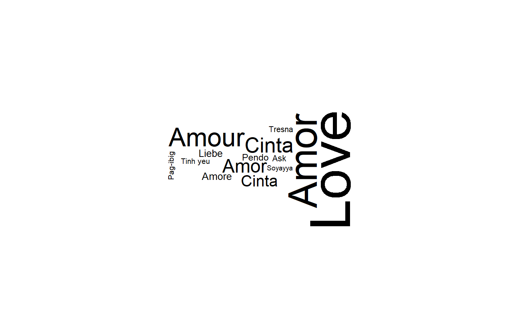

ggwordcloud is meant as an approximate replacement for
wordcloud. It has almost the same syntax but allows
only the words/freqs input. As the underlying algorithms are not strictly
equal, the resulting wordcloud is only similar to the ones one can obtain
with wordcloud.
ggwordcloud(words, freq, scale = c(4, 0.5), min.freq = 3, max.words = Inf, random.order = TRUE, random.color = FALSE, rot.per = 0.1, colors = "black", ordered.colors = FALSE, ...)
| words | the words |
|---|---|
| freq | their frequencies |
| scale | A vector of length 2 indicating the range of the size of the words. |
| min.freq | words with frequency below min.freq will not be plotted |
| max.words | Maximum number of words to be plotted. least frequent terms dropped |
| random.order | plot words in random order. If false, they will be plotted in decreasing frequency |
| random.color | choose colors randomly from the colors. If false, the color is chosen based on the frequency |
| rot.per | proportion words with 90 degree rotation |
| colors | color words from least to most frequent |
| ordered.colors | if true, then colors are assigned to words in order |
| ... | Additional parameters to be passed to geom_text_wordcloud |
a ggplot
set.seed(42) dat <- mtcars dat$name <- row.names(mtcars) dat$size <- dat$mpg dat$size[1] <- 300 ggwordcloud(dat$name, dat$size)